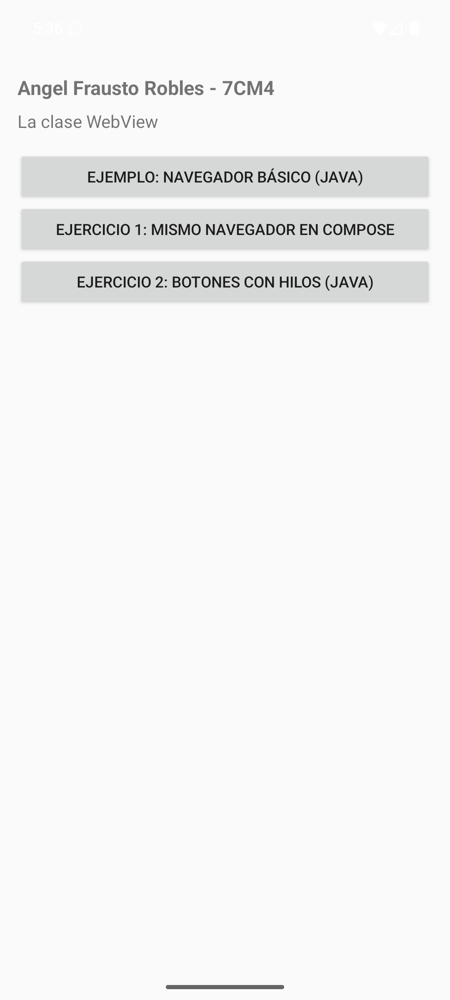
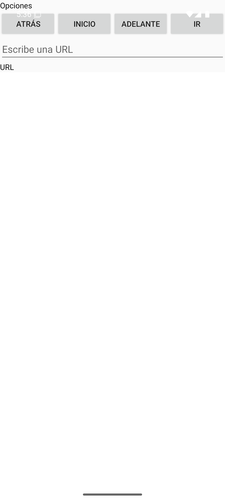
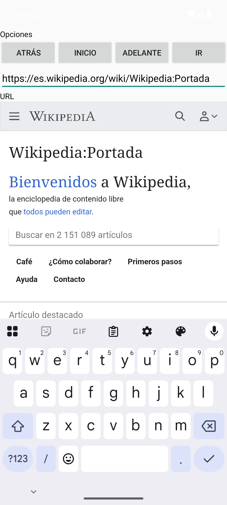
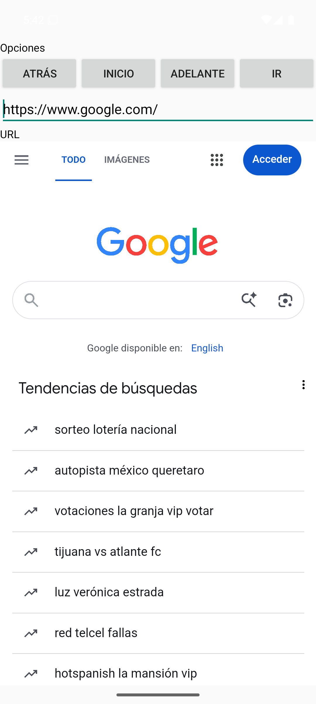
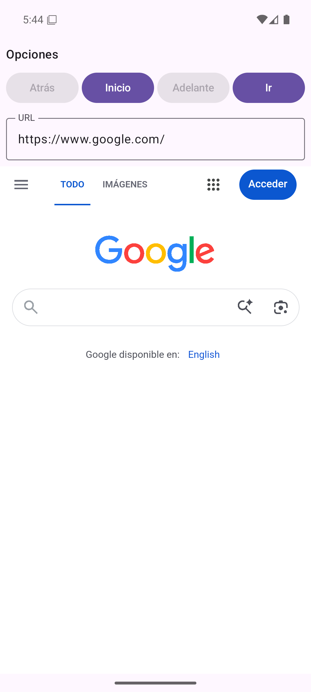
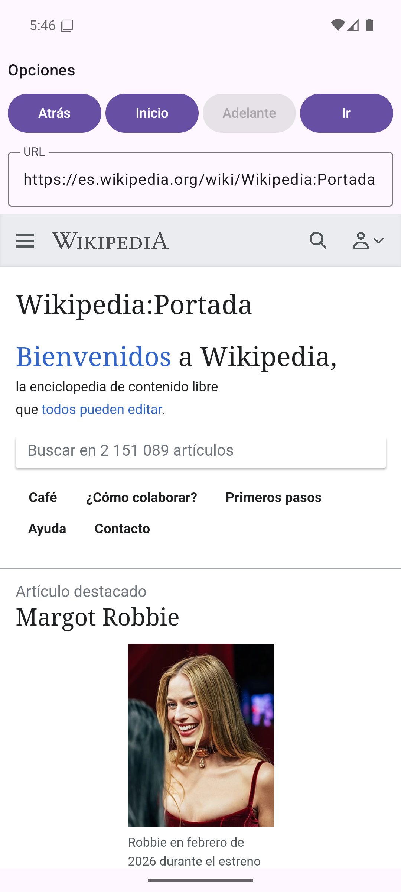
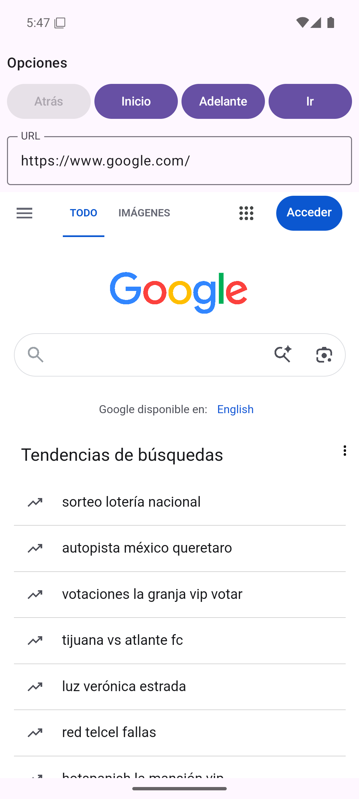
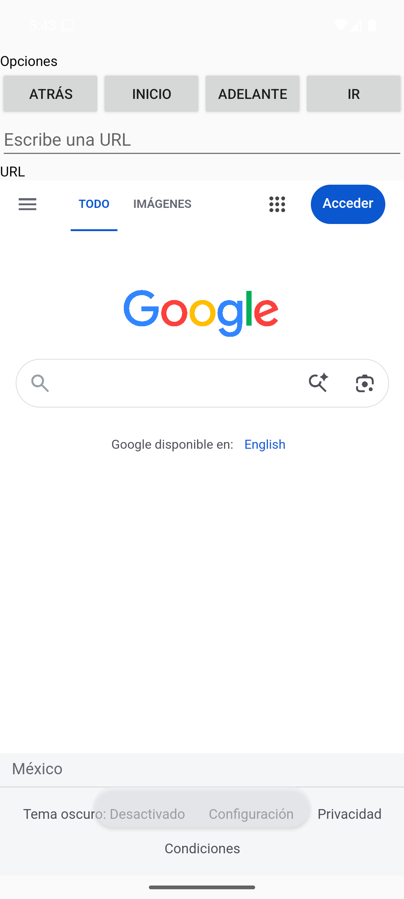
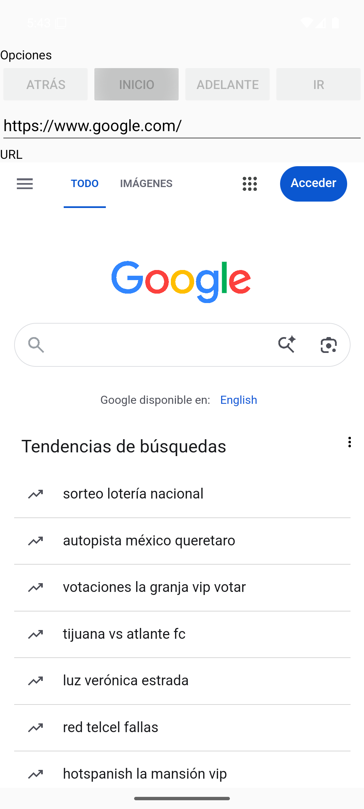

| Asignatura: | Desarrollo de Aplicaciones Móviles Nativas |
| Práctica: | Práctica 15 |
| Alumno: | Angel Frausto Robles |
| Grupo: | 7CM4 |
| Fecha: | 21 de noviembre de 2026 |
WebView es un View de Android que incrusta el motor de renderizado web (WebKit/Chromium) dentro de una Activity, permitiendo mostrar páginas de Internet o HTML propio sin invocar un navegador aparte. Requiere el permiso INTERNET y, para interactividad real, habilitar JavaScript en sus WebSettings. Los puntos de personalización principales son WebViewClient (controla la navegación y la carga de contenido) y WebChromeClient (eventos de interfaz, como el progreso de carga).
Objetivos:
AndroidView para incrustar el WebView (Ejercicio 1).Un solo proyecto, WebView, con un menú (MainActivity) que abre las tres pantallas: EjemploActivity y Ejercicio2Activity en Java (comparten el layout activity_navegador.xml), y WebViewComposeActivity en Kotlin con Compose. Se ejecutó en un emulador Android 16 (API 36) con acceso real a Internet (red NAT del emulador), minSdk 24, targetSdk 36.
targetSdk 36. La primera versión del layout activity_navegador.xml no traía android:fitsSystemWindows="true" en la raíz. A partir de Android 15 las apps con targetSdk alto se dibujan automáticamente borde a borde: sin ese atributo, la fila de botones Atrás/Inicio/Adelante/Ir quedaba físicamente debajo de la barra de estado del sistema y, aunque se veía en pantalla, los toques no le llegaban a los Button (se los quedaba la barra de estado). El síntoma era que wv.loadUrl(...) nunca se ejecutaba y la pantalla se quedaba en blanco. La solución, igual que en activity_main.xml, es agregar fitsSystemWindows="true" a la raíz del layout para que el sistema reserve el espacio de la barra de estado.El WebViewClient intercepta la navegación (shouldOverrideUrlLoading devuelve false para que todo se cargue dentro del mismo WebView) y actualiza el campo de URL cuando la página termina de cargar.
package com.example.webview;
public class EjemploActivity extends Activity implements OnClickListener {
Button xbn1, xbn2, xbn3, xbn4;
WebSettings ws;
WebView wv;
EditText xet;
String s = "https://www.google.com/";
@Override
public void onCreate(Bundle b) {
super.onCreate(b);
setContentView(R.layout.activity_navegador);
xbn1 = (Button) findViewById(R.id.xbn1); xbn1.setOnClickListener(this);
xbn2 = (Button) findViewById(R.id.xbn2); xbn2.setOnClickListener(this);
xbn3 = (Button) findViewById(R.id.xbn3); xbn3.setOnClickListener(this);
xbn4 = (Button) findViewById(R.id.xbn4); xbn4.setOnClickListener(this);
xet = (EditText) findViewById(R.id.xet);
wv = (WebView) findViewById(R.id.xwv);
wv.setWebViewClient(new Cliente());
ws = wv.getSettings();
ws.setBuiltInZoomControls(true);
ws.setJavaScriptEnabled(true);
ws.setUseWideViewPort(true);
}
class Cliente extends WebViewClient {
@Override
public boolean shouldOverrideUrlLoading(WebView view, String url) { return false; }
@Override
public void onPageFinished(WebView view, String url) { xet.setText(url); }
}
@Override
public void onClick(View v) {
int id = v.getId();
if (id == R.id.xbn1) wv.goBack();
else if (id == R.id.xbn2) wv.loadUrl(s);
else if (id == R.id.xbn3) wv.goForward();
else if (id == R.id.xbn4) wv.loadUrl(xet.getText() + "");
}
}




Nota sobre el campo de URL: igual que en la guía original, wv.loadUrl(xet.getText() + "") no agrega un esquema por defecto: si se escribe example.com sin https://, el WebView no resuelve nada (limitación del ejemplo base, no del dispositivo). Por eso las pruebas usan URLs completas, como hace la guía al definir s = "https://www.google.com/" para el botón Inicio.
El WebView se incrusta con AndroidView, cuyo factory lo crea y configura una sola vez. El estado de los botones Atrás/Adelante (habilitados o no) vive en remember { mutableStateOf(...) } y se actualiza en doUpdateVisitedHistory/onPageFinished del WebViewClient. Un BackHandler intercepta el botón Atrás del sistema para navegar el historial del WebView en vez de cerrar la Activity.
@Composable
fun Navegador(modifier: Modifier = Modifier) {
var direccion by rememberSaveable { mutableStateOf("") }
var navegador by remember { mutableStateOf<WebView?>(null) }
var puedeRetroceder by remember { mutableStateOf(false) }
var puedeAvanzar by remember { mutableStateOf(false) }
fun actualizarHistorial(view: WebView) {
puedeRetroceder = view.canGoBack()
puedeAvanzar = view.canGoForward()
}
BackHandler(enabled = puedeRetroceder) { navegador?.goBack() }
Column(modifier = modifier) {
Row(/* Atrás, Inicio, Adelante, Ir */) { /* ... */ }
OutlinedTextField(value = direccion, onValueChange = { direccion = it; error = null }, /* ... */)
AndroidView(
modifier = Modifier.fillMaxWidth().weight(1f),
factory = { context ->
WebView(context).apply {
settings.javaScriptEnabled = true
webViewClient = object : WebViewClient() {
override fun doUpdateVisitedHistory(view: WebView, url: String?, isReload: Boolean) {
actualizarHistorial(view)
}
override fun onPageFinished(view: WebView, url: String?) {
if (url != null) direccion = url
actualizarHistorial(view)
}
}
navegador = this
loadUrl(PAGINA_INICIO)
}
},
onRelease = { view -> navegador = null; view.stopLoading(); view.destroy() }
)
}
}
La función normalizarUrl() sí valida el esquema (agrega https:// si falta y rechaza direcciones sin host), a diferencia del Ejemplo base en Java; es la diferencia de diseño más visible entre las dos versiones.



La guía pide «asignarle un hilo a la ejecución digitada de cada botón, incluyendo su tiempo de ejecución (o espera) para evitar congestión en el tiempo de carga». Se implementó deshabilitando los cuatro botones, lanzando un Thread que espera 800 ms (tiempo simulado de «espera antes de ejecutar») y, de regreso en el hilo de UI con runOnUiThread, aplicando la acción real sobre el WebView y reactivando los botones. El WebView no es thread-safe, así que la navegación en sí siempre ocurre en el hilo principal; lo que corre en el hilo secundario es solamente la espera.
private void ejecutarConHilo(Runnable accionSobreWebView) {
setBotonesHabilitados(false);
final long inicio = System.currentTimeMillis();
new Thread(() -> {
try { Thread.sleep(ESPERA_MS); } catch (InterruptedException ignored) {}
final long transcurrido = System.currentTimeMillis() - inicio;
runOnUiThread(() -> {
accionSobreWebView.run();
setBotonesHabilitados(true);
Toast.makeText(this, "Hilo ejecutado tras " + transcurrido + " ms", Toast.LENGTH_SHORT).show();
});
}).start();
}


El WebView resultó sencillo de integrar tanto en vistas XML clásicas como en Compose, donde AndroidView permite reutilizar directamente la API de Android sin reescribirla. La parte menos evidente de la práctica no fue el código del propio WebView, sino un error de layout: con targetSdk 36 el sistema fuerza el dibujo borde a borde, y sin fitsSystemWindows los botones quedaban visualmente en pantalla pero inalcanzables al tacto porque la barra de estado absorbía los toques. Sobre los hilos, quedó claro que «ejecutar la acción en un hilo» solo puede referirse al tiempo de espera: cualquier llamada directa al WebView fuera del hilo de UI lanza una excepción, así que el hilo secundario únicamente retrasa la orden y la propia navegación se delega de vuelta a runOnUiThread.